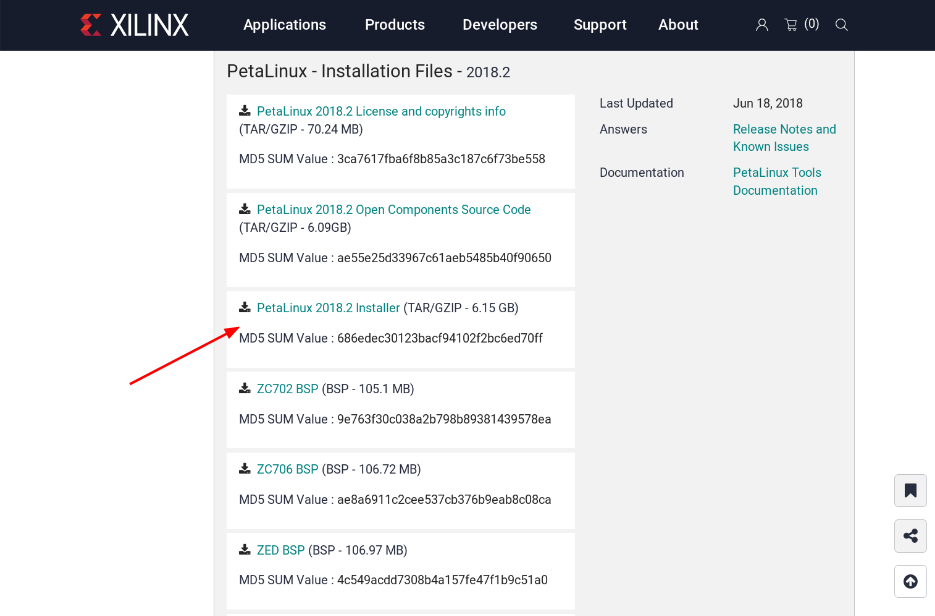
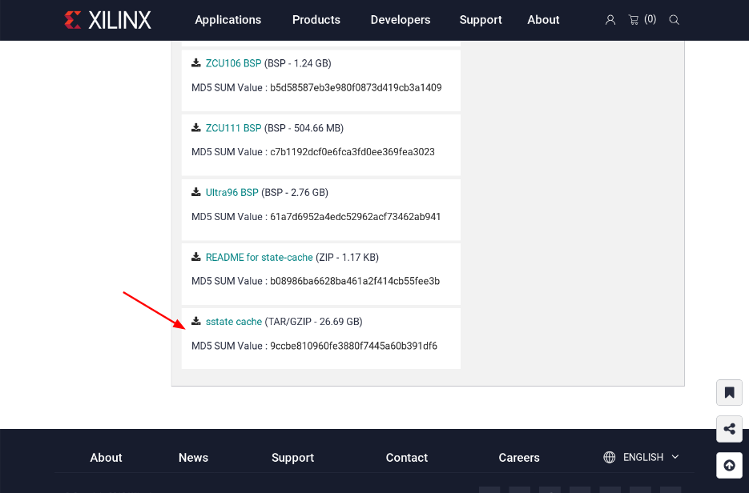
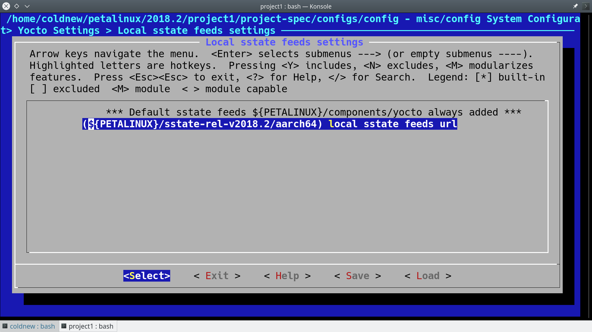
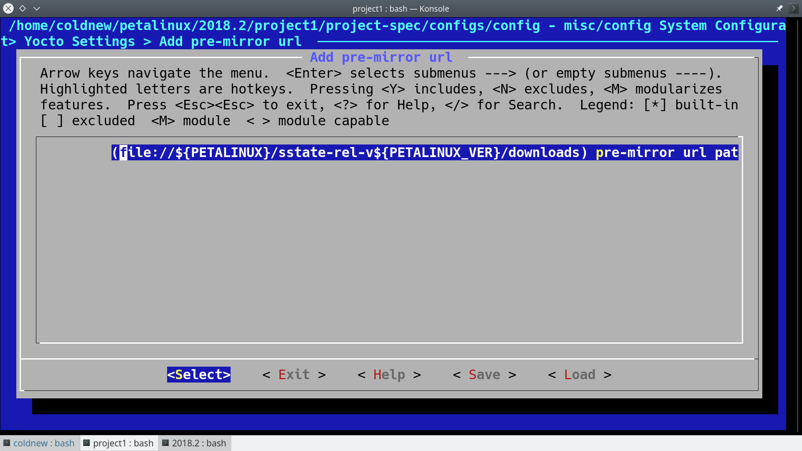
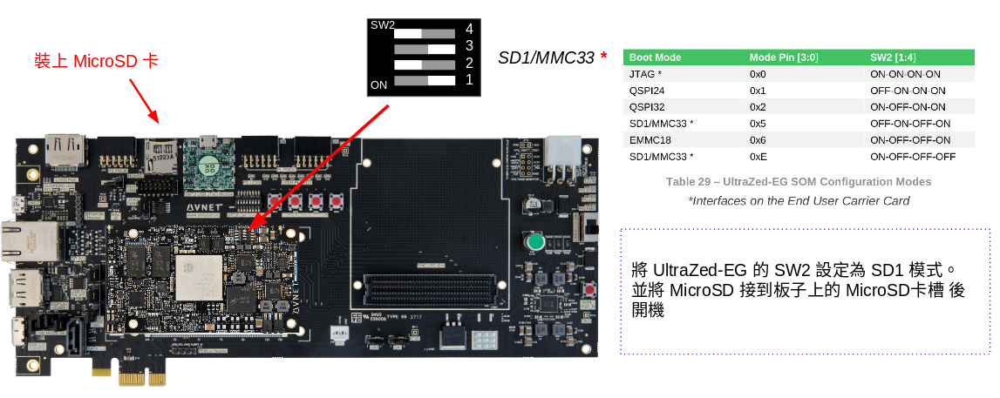

在了解了如何透過 Vivado 搭配 Xilinx SDK 來控制 Cortex-A53 和 Cortex-R5 後，是時候把 Linux 裝上來啦。
針對不同嵌入式環境的需求，Xlinux 針對他們自己的平台，提供了基於 Yocto Project 製作的發行板製作工具，並命名為 PetaLinux 。這篇文章將介紹如何使用基本的 PetaLinux 功能，並建立一個可開機的映像檔 (Image) 讓 UltraZed-EG PCIe Carrier Card 開機並進入到 Linux 系統。
(本文以 Vivado 2018.2 以及 PetaLinux 2018.2 進行開發)
PetaLinux 和 Yocto 的不同
一開始遇到 PetaLinux 時會覺的奇怪，使用 Yocto Project 建立自己的 Linux 系統就好了，為什麼還需要 PetaLinux 呢？實際上，Xilinux 在 PetaLinux 加了不少工具，包含如何讓 PetaLinux 呼叫一些 Xilinux SDK 裡面的工具，讓你可以方便的產生出開機用的 BOOT.bin ，除此之外，最重要的應該就是 device tree 的產生了。
由於 UltraZed-EG PCIe Carrier Card 這塊板子上的 SoC 是 FPGA 搭配 ARM Cortex-A53/R5 這樣的組合，有些我們需要加速處理的部份會需要透過 FPGA 來實做，而在 UltraZed-EG PCIe Carrier Card 開發紀錄: Hello Cortex-R5 一文中，我們產生中斷(interrupt)時候需要的中斷編號 (XPAR_FABRIC_AXI_GPIO_0_IP2INTC_IRPT_INTR) 也是透過 Xilinx SDK 來幫我們產生的。
使用 PetaLinux 來建立系統時候，PetaLinux 會根據你的硬體設置，自動幫你生成相對應的 Device Tree ，讓我們的開發可以變得比較輕鬆。如果是用純粹的 Yocto Project 的話，很多地方就要先確認好才可以整合進去了，會比較麻煩些。
當然，因為 PetaLinux 畢竟是基於 Yocto Project 設計的，因此在使用 Yocto Project 時學會的 recipes 撰寫等知識都還是可以套用到這邊。
讓我們來看看怎樣用 PetaLinux 來建立 UltraZed-EG PCIe Carrier Card 的開機映像檔吧～
在進行以下步驟前，建議先閱讀一下 UG1144 (v2018.2): PetaLinux Tools Documentation Reference Guide.pdf 這份 PetaLinux 的官方文件。
下載 PetaLinux
首先第一步就是連到 Xilinx 官網 去下載 PetaLinux 啦，由於 PetaLinux 只能在 Linux 下面執行，因此你也需要準備一個 Linux 虛擬機才行呦~
下載 PetaLinux 2018.2 Installer (需要註冊才可以下載)

下載完成後，會得到 petalinux-v2018.2-final-installer.run 這個檔案。
下載 sstate-cache (optional)
除了下載 PetaLinux 2018.2 Installer 外，有用過 Yocto Project 的人應該都知道，為了減少時間， Yocto Project 會把已經編譯好的物件檔放到 sstate-cacehe 資料夾內，因此為了加速編譯的速度，我們也下載一下 Xilinx 提供的 sstate-cache 吧
一樣到 這裡 去下載我們要的檔案

下載完成會得到 sstate-rel-v2018.2.tar.gz 這個檔案
下載 UltraZed-EG PCIeCC BSP
安裝 PetaLinux
現在我們有了 petalinux-v2018.2-final-installer.run 、 sstate-rel-v2018.2.tar.gz 、 uz3eg_pciec_2018_2.zip 這三個檔案，就來安裝吧
(記得要看一下 UG1144 (v2018.2): PetaLinux Tools Documentation Reference Guide.pdf 確定你系統相關套件已經滿足了呦)
假設我要裝到 ~/petalinux/2018.2 則這樣執行它，然後你需要同意很多個條文才行
coldnew@gentoo ~ $ ./petalinux-v2018.2-final-installer.run ~/petalinux/2018.2 INFO: Checking installer checksum... INFO: Extracting PetaLinux installer... skip .... Press Enter to display the license agreements Do you accept Xilinx End User License Agreement? [y/N] > y Do you accept Webtalk Terms and Conditions? [y/N] > y Do you accept Third Party End User License Agreement? [y/N] > y skip .... INFO: Checking PetaLinux installer integrity... INFO: Installing PetaLinux SDK to "/home/coldnew/petalinux/2018.2/." ================================================= SDK has been successfully set up and is ready to be used. Each time you wish to use the SDK in a new shell session, you need to source the environment setup script e.g. $ . /home/coldnew/petalinux/2018.2/components/yocto/source/environment-setup-cortexa9hf-neon-xilinx-linux-gnueabi $ . /home/coldnew/petalinux/2018.2/components/yocto/source/environment-setup-microblazeel-v10.0-bs-cmp-re-mh-div-xilinx-linux $ . /home/coldnew/petalinux/2018.2/components/yocto/source/environment-setup-microblazeel-v10.0-bs-cmp-re-ml-xilinx-linux INFO: PetaLinux SDK has been installed to /home/coldnew/petalinux/2018.2/.
安裝完後，現在我的 ~/petalinux/2018.2 會有這些檔案
coldnew@gentoo ~/petalinux/2018.2 $ tree -L 2.
. <b>
├── components <b>
│ ├── apps <b>
│ ├── misc <b>
│ └── yocto <b>
├── etc <b>
│ ├── hsm <b>
│ ├── libs <b>
│ ├── license <b>
│ ├── logging <b>
│ ├── qemu <b>
│ ├── scripts_py <b>
│ └── template <b>
├── settings.csh
├── settings.sh
└── tools <b>
├── common <b>
├── hsm <b>
├── lib <b>
├── linux-i386 <b>
└── webtalk <b>
18 directories, 2 files
接下來，把 sstate-rel-v2018.2.tar.gz 解壓縮到這個目錄下
coldnew@gentoo ~/petalinux/2018.2 $ tar xvf ~/sstate-rel-v2018.2.tar.gz
你會發現到在 ~/petalinux/2018.2 裡面增加了 sstate-rel-v2018.2 這個資料夾。接著一樣解壓 uz3eg_pciec_2018_2.zip 會得到 uz3eg_pciec_2018_2.bsp 這個檔案。
現在讓我們來建立我們的編譯環境吧~
建立編譯環境
要進入到 PetaLinux 的環境，我們首先要 source settings.sh 一下
coldnew@gentoo ~/petalinux/2018.2 $ source settings.sh PetaLinux environment set to '/home/coldnew/petalinux/2018.2' INFO: Checking free disk space INFO: Checking installed tools INFO: Checking installed development libraries INFO: Checking network and other services WARNING: No tftp server found - please refer to "PetaLinux SDK Installation Guide" for its impact and solution
我們進入到 PetaLinux 的環境了，利用剛剛的 uz3eg_pciec_2018_2.bsp 來建立我們的專案吧，這裡命名為 project1
coldnew@gentoo ~/petalinux/2018.2 $ petalinux-create -t project -s uz3eg_pciec_2018_2.bsp --name project1 INFO: Create project: project1 INFO: New project successfully created in /home/coldnew/petalinux/2018.2/project1
於是 PetaLinux 依據 uz3eg_pciec_2018_2.bsp 的資料，幫我們建立好 project1 這個資料夾，進去看看有什麼
coldnew@gentoo ~/petalinux/2018.2/project1 $ tree -L 2.
. <b>
├── components <b>
│ └── plnx_workspace <b>
├── config.project
├── hardware <b>
│ └── UZ3EG_PCIEC <b>
├── pre-built <b>
│ └── linux <b>
└── project-spec <b>
├── attributes
├── configs <b>
├── hw-description <b>
├── meta-plnx-generated <b>
├── meta-user <b>
└── yocto-layer.log <g>
11 directories, 3 files
這就是我們編譯環境的資料夾大致組成，使用者最需要關注的就是 project-spec 這資料夾囉，裡面會包含我們自己額外定義的一些 Yocto recipes 和 Xilix 工具產生的一些相關 patch 等，具體資訊後續文章有機會會再題到。
設定 PetaLinux
進入到我們開發用的 project1 目錄後，第一步就是對 PetaLinux 進行設定
coldnew@gentoo ~/petalinux/2018.2/project1 $ petalinux-config
就會進入到 ncursed based 的畫面，我們需要指定我們的 sstate-cache 資料夾的位置
文字版
Yocto Settings ---> Local sstate feeds settings ---> (${PETALINUX}/sstate-rel-v${PETALINUX_VER}/aarch64) local sstate feeds url
圖片版

另外也指定預先下載資料夾位置
文字版
Yocto Settings ---> Add pre-mirror url ---> (file://${PETALINUX}/sstate-rel-v${PETALINUX_VER}/downloads) pre-mirror url path
圖片版

設定好後，存檔!
編譯系統
編譯 PetaLinux 是很輕鬆愉快的，只要下 petalinux-build 然後去睡個覺就好了~
coldnew@gentoo ~/petalinux/2018.2/project1 $ petalinux-build
如果你有遇到編譯錯誤，可以到 其他遇到的問題 找看看是否我也有遇到
編譯完成後，在 images 資料夾下面就增加一堆檔案囉~
coldnew@gentoo ~/petalinux/2018.2/project1 $ tree -L 2 images/
images/ <b>
└── linux <b>
├── bl31.bin
├── bl31.elf
├── Image
├── image.ub
├── pmufw.elf
├── rootfs.bin
├── rootfs.cpio <r>
├── rootfs.cpio.bz2 <r>
├── rootfs.cpio.gz <r>
├── rootfs.cpio.gz.u-boot
├── rootfs.ext3
├── rootfs.ext3.bz2 <r>
├── rootfs.ext4
├── rootfs.ext4.gz <r>
├── rootfs.its
├── rootfs.jffs2
├── rootfs.manifest
├── rootfs.tar.bz2 <r>
├── rootfs.tar.gz <r>
├── rootfs.testdata.json
├── system.bit
├── system.dtb
├── System.map.linux
├── u-boot.bin
├── u-boot.elf
├── vmlinux
└── zynqmp_fsbl.elf
1 directory, 27 files
其中這次我們會用到的是 image.ub 這是 Kernel Image 包含了 ramdisk 的檔案，也就是載入後會直接進入到裡面的 ramdisk 去
製作 BOOT.bin
在 images 資料夾下生出的一駝檔案內，沒有開機時第一個被載入的 BOOT.bin ，因此我們需要自己透過命令去產生。注意到這邊命令一定要把你的位元流 (bitstream) 給包進來，以此範例就是 images/linux/system.bit 這個檔案。
coldnew@gentoo ~/petalinux/2018.2/project1 $ petalinux-package --boot --u-boot --fpga ./images/linux/system.bit
INFO: File in BOOT BIN: "/home/coldnew/petalinux/2018.2/uz3eg_pciec_2018_2/images/linux/zynqmp_fsbl.elf"
INFO: File in BOOT BIN: "/home/coldnew/petalinux/2018.2/uz3eg_pciec_2018_2/images/linux/pmufw.elf"
INFO: File in BOOT BIN: "/home/coldnew/petalinux/2018.2/uz3eg_pciec_2018_2/images/linux/system.bit"
INFO: File in BOOT BIN: "/home/coldnew/petalinux/2018.2/uz3eg_pciec_2018_2/images/linux/bl31.elf"
INFO: File in BOOT BIN: "/home/coldnew/petalinux/2018.2/uz3eg_pciec_2018_2/images/linux/u-boot.elf"
INFO: Generating zynq binary package BOOT.BIN...
****** Xilinx Bootgen v2018.2
**** Build date : Jun 14 2018-20:09:18
** Copyright 1986-2018 Xilinx, Inc. All Rights Reserved.
INFO: Binary is ready.
WARNING: Unable to access the TFTPBOOT folder /tftpboot!!!
WARNING: Skip file copy to TFTPBOOT folder!!!
我們可以看到當呼叫 petalinux-package 後，它會透過 Xilinx SDK 裡面的 Bootgen 程式幫我們把實際要用的 BOOT.bin 產生出來，在 UltraScale+ 系列的 SoC，其 BOOT.bin 和 Zynq 系列多少還是有些差異，這些之後有時間可以來講講整個 BOOT.bin 的開機流程。
當剛剛的命令下好之後，會生出 BOOT.bin 檔案，位於 images/linux/BOOT.bin
coldnew@gentoo ~/petalinux/2018.2/project1 $ ls -lh images/linux/BOOT.BIN -rw-r--r-- 1 coldnew coldnew 6.4M 12 月 8 08:38 images/linux/BOOT.BIN
於是我們可以來製作我們的 SD 卡啦
製作 SD 卡
現在來製作 SD 卡啦，基本上你的卡片只要第一個分割區是 fat32 就可以了，我們複製 images/linux/ 下的這兩個檔案到 SD 卡 的 分割區 1
BOOT.bin image.ub
這樣就好囉!
設定 SD 卡開機
為了透過 MicroSD 卡開機，我們需要對 UltraZed-EG 上的 SW2 要進行一些調整，變成下圖這樣。

設定好並裝上 MicroSD 卡後後，按下 Reset 按鈕或是重開機就可以看看是否有開機成功了，我們可以在 Liunux 下的 /dev/ttyUSB1 收到訊息。
結果
按照本篇文章的設定，你的 UltraZed-EG PCIe Carrier Card 顯示應該如以下影片:
這是因為這份 AVNET 公司所提供的 BSP 預設會啟動一個名為 blinky 的 LED 閃爍燈程式，我們後續文章將講解如何自製自己的 rootfs。
另外，我們也可以透過 minicom, emacs, tio, gtkterm 等終端機軟體，連接上 /dev/ttyUSB1 來查看透過 printf() 輸出的訊息。其中登入用的帳號為 root ，密碼也是 root 。
Release 2018.2 Dec 7 2018 - 13:16:01 NOTICE: ATF running on XCZU3EG/silicon v4/RTL5.1 at 0xfffea000 NOTICE: BL31: Secure code at 0x0 NOTICE: BL31: Non secure code at 0x8000000 NOTICE: BL31: v1.4(release):xilinx-v2018.1-4-g93a69a5a NOTICE: BL31: Built : 14:47:04, Dec 6 2018 PMUFW: v1.0 U-Boot 2018.01 (Dec 06 2018 - 22:47:22 +0800) Xilinx ZynqMP ZCU102 rev1.0 I2C: ready DRAM: 2 GiB EL Level: EL2 Chip ID: zu3eg MMC: sdhci@ff160000: 0 (eMMC), sdhci@ff170000: 1 (SD) SF: Detected n25q256a with page size 512 Bytes, erase size 128 KiB, total 64 MiB In: serial@ff000000 Out: serial@ff000000 Err: serial@ff000000 Board: Xilinx ZynqMP Net: ZYNQ GEM: ff0e0000, phyaddr 9, interface rgmii-id eth0: ethernet@ff0e0000 Hit any key to stop autoboot: 0 boot Petalinux ********************************************************************* *** *** *** Avnet UltraZed Out Of Box PetaLinux Build V1.2 *** *** The PS LED is mapped to ZynqMP MIO26 *** *** *** ********************************************************************* PetaLinux 2018.2 uz3eg-pciec-2018-2 /dev/ttyPS0 uz3eg-pciec-2018-2 login: root Password: root@uz3eg-pciec-2018-2:~#
其他遇到的問題
以下列出我在使用 PetaLinux 2018.2 搭配 Gentoo Linux 遇到的一些問題與處理方案
在使用 Gentoo Linux 或是 Ubuntu 18.04 編譯 PetaLinux 2018.2 的時候都會遇到這樣的錯誤
ERROR: petalinux-user-image-1.0-r0 do_rootfs: [log_check] petalinux-user-image: found 4 error messages in the logfile: log_check] Failed to set locale, defaulting to C log_check] Failed to set locale, defaulting to C log_check] Failed to set locale, defaulting to C log_check] Failed to set locale, defaulting to C
這個問題的來源是 Python ，因此我們需要參考 Re: PetaLinux build fails with locale errors. How to disable locale checks? 一文進行修正，怎樣修正呢?
這一版本 PetaLinux 搭配的是 Python 3.5, 因此我們找出裡面的 locale.py 搭配以下的 patch 進行修改就好了
--- a/locale.py 2018-10-15 17:25:17.190016676 +0800 +++ b/locale.py 2018-10-15 17:27:00.410016591 +0800 @@ -591,7 +591,11 @@ if locale and not isinstance(locale, _builtin_str): # convert to string locale = normalize(_build_localename(locale)) - return _setlocale(category, locale) + try: + return _setlocale(category, locale) + except: + pass + def resetlocale(category=LC_ALL):
因為要修改的檔案很多，你可以 下載 locale.py 來取代手動編輯的動作，將這個 locale.py 複製到以下路徑
首先接到我們要編譯的環境，這邊以 project1 為例子
coldnew@gentoo ~/petalinux/2018.2 $ source settings.sh coldnew@gentoo ~/petalinux/2018.2 $ cd project1
接下來用以下指令將 locale.py 複製到這些位置
# NOTE: first modify one locale.py # then copy to following path LOCALEPY="~/locale.py" cp "${LOCALEPY}" ./build/tmp/sysroots-components/aarch64/python3/usr/lib/python3.5/locale.py cp "${LOCALEPY}" ./build/tmp/sysroots-components/x86_64/python3-native/usr/lib/python3.5/locale.py cp "${LOCALEPY}" ./build/tmp/work/plnx_zynqmp-xilinx-linux/fsbl/2018.2+gitAUTOINC+6e82c0183b-r0/recipe-sysroot-native/usr/lib/python3.5/locale.py cp "${LOCALEPY}" ./build/tmp/work/plnx_zynqmp-xilinx-linux/pmu-firmware/2018.2+gitAUTOINC+6e82c0183b-r0/recipe-sysroot-native/usr/lib/python3.5/locale.py cp "${LOCALEPY}" ./build/tmp/work/plnx_zynqmp-xilinx-linux/petalinux-user-image/1.0-r0/recipe-sysroot-native/usr/lib/python3.5/locale.py cp "${LOCALEPY}" ./build/tmp/work/plnx_zynqmp-xilinx-linux/linux-xlnx/4.14-xilinx-v2018.2+gitAUTOINC+ad4cd988ba-r0/recipe-sysroot-native/usr/lib/python3.5/locale.py cp "${LOCALEPY}" ${PETALINUX}/components/yocto/source/aarch64/buildtools/sysroots/x86_64-petalinux-linux/usr/lib/python3.5/locale.py cp "${LOCALEPY}" ${PETALINUX}/components/yocto/source/buildtools/sysroots/x86_64-petalinux-linux/usr/lib/python3.5/locale.py
這樣再重新編譯就沒問題囉~